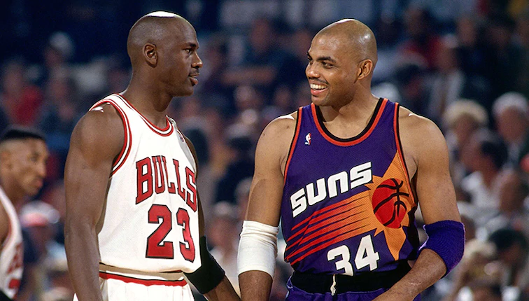

Campeonatos desde 1991 hasta 1995
1990-1991 Chicago Bulls
En las finales de 1991 se enfrentaron Los Angeles Lakers, campeón de la conferencia oeste, contra Chicago Bulls, campeón de la conferencia este.
Fueron las primeras Finales de Michael Jordan y las últimas de Magic Johnson.
Los Bulls ganaron las series por 4-1, con Jordan premiado con el MVP de las Finales, promediando 31.2 puntos con un 56% en tiros de campo, 11.4 asistencias, 6.6 rebotes, 2.8 robos de balón y 1.4 tapones.
Hay que resaltar que en los playoffs de este año los Chicago Bulls derrotaron a Detroit Pistons los vigentes bicampeones de la NBA, en esta serie los Bulls ganaron todos los partidos.
1991-1992 Chicago Bulls
En las finales de 1992 se enfrentaron Portland Trail Blazers, campeón de la conferencia oeste, contra Chicago Bulls, campeón de la conferencia este.
Los dos equipos parecían encaminarse uno frente al otro durante la mayor parte de la temporada y se hicieron comparaciones entre Clyde Drexler y Michael Jordan durante toda la campaña.
Un mes antes, la revista Sports Illustrated calificó a Drexler como el principal rival de Jordan en una portada en la que ambos jugadores aparecían juntos antes de playoffs. Los medios de comunicación, con la esperanza de recrear una rivalidad similar a la de Magic Johnson y Larry Bird, compararon a Jordan y a Drexler antes de las finales.
Los Bulls ganaron la serie en seis partidos y Michael Jordan fue nombrado MVP de las Finales por segundo año consecutivo.
1992-1993 Chicago Bulls
En las finales de 1993 se enfrentaron Phoenix Suns, campeón de la conferencia oeste, contra Chicago Bulls, campeón de la conferencia este.
Los Bulls se convirtieron en el primer equipo desde los Boston Celtics de los años 1960 en ganar tres campeonatos consecutivos.
Michael Jordan fue nombrado MVP de las Finales por tercera vez en su carrera.
Fue una dura derrota para los Suns ya que era la segunda vez que llegaban a la final y no conseguían ganar.

1993-1994 Houston Rockets
Fue la segunda aparición de Hakeem Olajuwon en unas Finales de la NBA, debutando en 1986, donde Larry Bird y los Boston Celtics derrotaron a los Rockets en seis partidos.
Estas Finales fueron las primeras de Patrick Ewing.
Los Rockets llegaban con el objetivo de ganar el primer campeonato de la franquicia, mientras que los Knicks buscaban su primer título desde las 1973.
Los Rockets ganaron a los Knicks en una serie poco anotadora y de partidos defensivos. Con la serie igualada en los dos primeros encuentros en Houston, los Knicks ganaron dos de los tres partidos en el Madison Square Garden, que también albergó el primer campeonato de la Stanley Cup en 40 años de los New York Rangers.
En el sexto encuentro, Olajuwon taponó un intento de lanzamiento de John Starks en el último segundo, dando a los Rockets la victoria por 86-84 y forzando el séptimo partido.
Pat Riley, técnico de los Knicks, se convirtió en el primer (y hasta le fecha único) entrenador en dirigir un séptimopartido de unas Finales en dos diferentes equipos, habiendo estado en idéntica posición con Los Angeles Lakers en 1984 y 1988.
Los Rockets ganaron a los Knicks en el séptimo y definitivo partido por 90-84, celebrando su primer campeonato de la NBA y quinto en el deporte profesional, e impidiendo a la ciudad de Nueva York festejar los títulos de NBA y NHL en un mismo año.
Olajuwon fue nombrado MVP de las Finales.
1994-1995 Houston Rockets
Las Finales de la NBA de 1995 fueron las series definitivas de los playoffs del 1995 y suponían la conclusión de la temporada 1994-95 de la NBA. Estas enfrentarían a Orlando Magic ante los Houston Rockets y traerían consigo un gran duelo en la pintura entre dos grandes pívots Shaquille O'Neal en los Magic y Hakeem Olajuwon por parte de los Rockets. Este emparejamiento sería comparado con el de Bill Russell y Wilt Chamberlain en los sesenta.
Los Rockets pasarían a ser el primer equipo en la historia de la NBA que conseguía ganar el campeonato después de haberse clasificado como sexto. Además, sería el primer equipo en ganar a cuatro equipos con 50 victorias en postemporada jugando fuera de casa. Finalmente los Rockets barrerían a Orlando Magic sin permitirles ganar ningún partido; fue la primera vez en la que un equipo ganaba los dos primeros partidos de las finales fuera de casa y además fueron las segundas finales en las que el ganador conseguía no perder ningún partido desde el formato de finales 2-3-2.